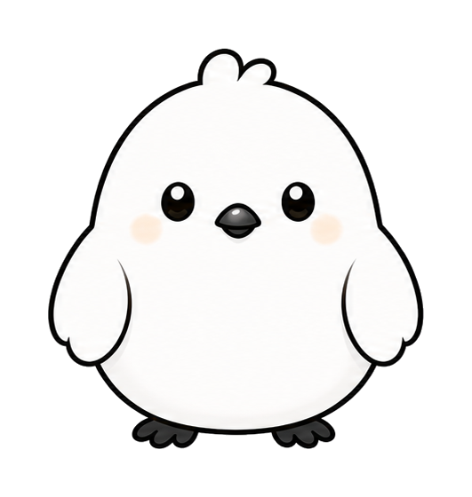
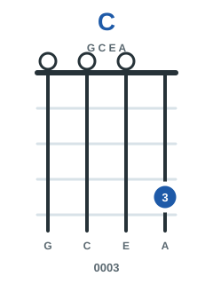

音のきもちをおぼえる
1 / 4
れんしゅうの森
今日はどの森を歩く？
同じCでも、鳥が変わると空気が変わるよ。
明るい、静か、そわっと、ふわっと。
まだ羽あとなし。まずは音を聞いてみよう。
つづきからはまだなし。
Stage 3 / 4 は次の森で準備中。今は入口から進行までを先に歩く。
ずかんの森
はじめの4羽
同じCを基準に、明るい・静か・進む・広がるを聞き分ける。
さがす羽
コード名・音名・種類でさがす
132コード
音名
コード種類
いまの歩き方
音カード
1つのコードを、鳥・音・運指・きもちでゆっくり見る。
まずは青い「音をきく」から。
Major C
C


ほっと帰れる明るさ
ちがいを聞く
並べてきく
近いコードを順番に聞いて、空気の違いを耳に残す。
音をきく
こたえ
C
ほっと帰れる明るさ
音をきいてえらぶ
どのコードかな？
0 / 0
流れできく
進行の森
鳥たちが並ぶと、曲の景色が少し見えてくる。